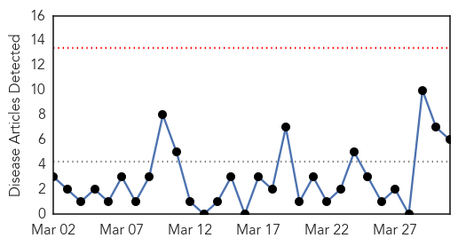
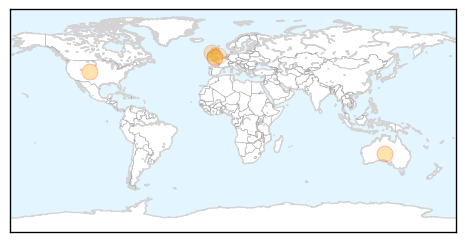
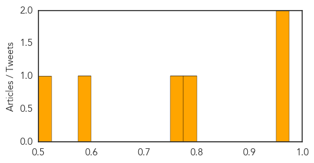

West Nile Virus
30-Day Web Trend
4 alerts, 0 warnings

30-Day Twitter Trend
0 alerts, 0 warnings

Article Locations

Article Confidences

Top Articles:
Top Tweets:
-
No tweets found for Mar 31, 2015
Meningitis
30-Day Web Trend
0 alerts, 0 warnings

30-Day Twitter Trend
0 alerts, 0 warnings

Article Locations
Article Confidences
Top Articles:
- 0.966
- CDC investigates kids’ limb paralysis; is enterovirus to blame?
- 0.953
- Winter sets global heat record despite US East's big chill
- 0.779
- Meningitis B vaccine is offered to all babies in UK
- 0.762
- Britain Will Be First To Offer Nationwide Meningitis B Vaccination Program
- 0.584
- Braunton family welcomes meningitis vaccine success
- 0.520
- New meningitis vaccine is Nuneaton toddler's 'little legacy'
Top Tweets:
-
No tweets found for Mar 31, 2015